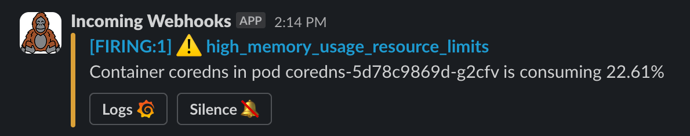
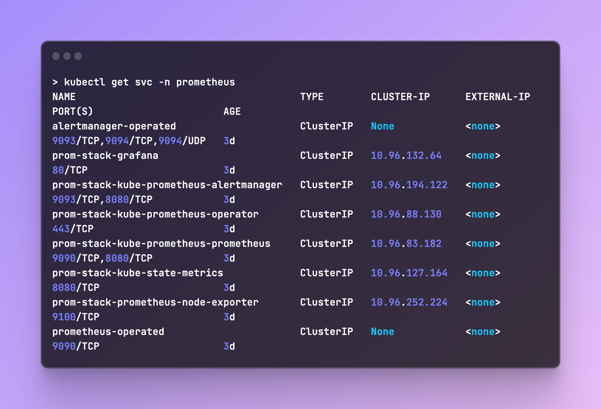
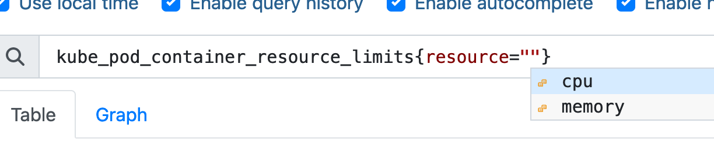
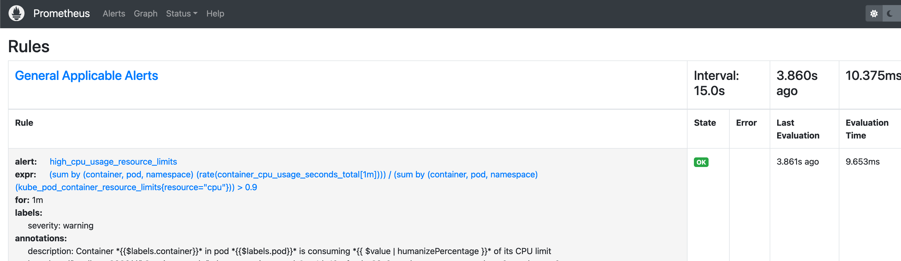

Setup Templated Slack alerts with Alertmanager
When you configure Alertmanager to send you slack messages about your rules, it usually looks something like this:

Let's turn it into a nicer looking message, the end result should look something like this: 
Setup
I'll be using KinD to setup a local K8s cluster and Helm to install kube-prometheus-stack. The community stack already includes all of the components we need for Prometheus like Alertmanager, Grafana, etc.
I'll be creating the following files in a new folder I called prometheus:
- Run
kind create cluster --name playground - Create the Prometheus folder.
- Create the
0-provider.tffile and let's configure Helm as our provider: - Now create
1-prometheus.tfand configure our helm values:
Tip
You can also avoid using Terraform by simply installing the chart manually:
- Get the chart's values and save them under
values/values.yaml: - Run
terraform initand thenterraform apply. You should get a bunch of new pods, deployments, services:
Configuring Rules
Now that we have Prometheus installed, let's configure some rules. I went with simple alerts for memory and CPU usage based on the resource limits.
Create rules.yaml and paste in the following manifest:
apiVersion: monitoring.coreos.com/v1
kind: PrometheusRule
metadata:
labels:
role: alert-rules
name: custom-rules
namespace: prometheus
spec:
groups:
- name: General Applicable Alerts
rules:
- alert: high_cpu_usage_resource_limits
expr: >
(
sum by (container, pod, namespace) (rate(container_cpu_usage_seconds_total[1m]))
)
/
(
sum by (container, pod, namespace) (kube_pod_container_resource_limits{resource="cpu"})
) > 0.9
for: 1m
labels:
severity: warning
annotations:
summary: "High CPU usage in {{$labels.pod}}"
description: "Container *{{$labels.container}}* in pod *{{$labels.pod}}* is consuming *{{ $value | humanizePercentage }}* of its CPU limit"
- alert: high_memory_usage_resource_limits
expr: >
(
sum by (container, pod, namespace) (container_memory_usage_bytes)
)
/
(
sum by (container, pod, namespace) (kube_pod_container_resource_limits{resource="memory"})
) > 0.9
for: 1m
labels:
severity: warning
annotations:
summary: "High memory usage in {{$labels.pod}}"
description: "Container *{{$labels.container}}* in pod *{{$labels.pod}}* is consuming *{{ $value | humanizePercentage }}* of its memory limit"
We're using the kube_pod_container_resource_limits metric to fetch the resource limits and the other metrics are calculating the CPU and memory usage on the pods.
Testing The Metrics
Let's port-forward Prometheus and query those metrics. You can run kubectl get svc -n <namespace> to fetch the services you need:

Now let's port-forward Prometheus: kubectl port-forward svc/prom-stack-kube-prometheus-prometheus 9090:9090 -n prometheus
You should be able to access Prometheus on http://localhost:9090 and run the metric we used: kube_pod_container_resource_limits
 The above returns all of our pods that this metric exposes. You can filter the
The above returns all of our pods that this metric exposes. You can filter the resource to only get CPU or Memory results. It's also nice to see Prometheus helping with auto-completion:

Let's run one of our rules to see what we get:
(
sum by (container, pod, namespace) (container_memory_usage_bytes)
)
/
(
sum by (container, pod, namespace) (kube_pod_container_resource_limits{resource="memory"})
)
 We can multiply by 100 to get the percentage, but we will handle that in the templating later.
We can multiply by 100 to get the percentage, but we will handle that in the templating later.
Send Alerts
Now that we have our rules setup and ready, let's setup alerts for our Slack Channel. Go ahead and create a webhook for your Slack channel. It takes a couple of minutes.
- Go to the
values.yamlfile we created for the Prometheus stack and underalertmanager.config, you should be able to findroute. Paste in the following config:route: group_by: ['alertname', 'container', 'pod', 'namespace'] group_wait: 30s group_interval: 1m repeat_interval: 3h receiver: 'slack-notifications' routes: - receiver: 'slack-notifications' matchers: - alertname = "Watchdog" receivers: - name: 'null' - name: 'slack-notifications' slack_configs: - send_resolved: false text: "{{ range .Alerts }}{{ .Annotations.description }}\n{{ end }}" api_url: 'your-slack-webhook' templates: - '/etc/alertmanager/config/*.tmpl' - Run
tf applyto apply the new values. - Open your
rules.yamlfile and change the threshold (0.9) to0.1. - Run
kubectl apply -f rules.yaml -n prometheusto apply thePrometheusRulemanifest to your cluster. - You can verify those rules applied by checking the Prometheus UI: 
- Wait for a trigger, within a few minutes you should get your first alert, assuming one of your pods is using more than 10% of it's memory limits. You can always lower the threshold if you want.
Test CPU Rules
This part is optional, but you can test a CPU using a tool like stress.
- Create a Pod with resource limits:
- Exec into it:
kubectl exec -it cpu-stress -- bash - Run
apt-get update && apt-get install -y stress - Run
stress --cpu 1. A single core will be enough to trigger the alert, as we only allow one core as the limit of the pod anyway.
Templating Alerts
We'll be using Monzo's Alertmanager Slack templates as our Slack templates.
In another method of deploying Alertmanager, you would be able to create the template manually inside of the alertmanager pod. In our case, we'll add this template inside of our values.yaml file. It might not be the cleanest method, but for our demo this should do just fine :)
-
Under the same place we edited earlier (
alertmanager.config), you can paste in the following:This is more or less Monzo's template with a few slight changes.route: group_by: ['alertname', 'container', 'pod', 'namespace'] group_wait: 30s group_interval: 1m repeat_interval: 4h receiver: 'slack-notifications' routes: - receiver: 'slack-notifications' matchers: - alertname = "Watchdog" receivers: - name: 'null' - name: 'slack-notifications' slack_configs: - send_resolved: false api_url: 'Slack-webhook-URL' title: '{{ template "slack.monzo.title" . }}' icon_emoji: '{{ template "slack.monzo.icon_emoji" . }}' color: '{{ template "slack.monzo.color" . }}' text: '{{ template "slack.monzo.text" . }}' actions: - type: button text: "Runbook :green_book:" url: "{{ (index .Alerts 0).Annotations.runbook }}" - type: button text: "Query :mag:" url: '{{ template "__generator_url_link" . }}' - type: button text: "Logs :grafana:" url: "{{ (index .Alerts 0).Annotations.logs }}" - type: button text: "Silence :no_bell:" url: '{{ template "__alert_silence_link" . }}' - type: button text: '{{ template "slack.monzo.link_button_text" . }}' url: "{{ .CommonAnnotations.link_url }}" # templates: # - '/etc/alertmanager/config/*.tmpl' templates: ["/etc/alertmanager/config/template_1.tmpl"] templateFiles: template_1.tmpl: |- {{ define "__generator_url_link" -}} https://thanos.${base_domain}/alerts {{- end }} {{ define "__alert_silence_link" -}} {{ .ExternalURL }}/#/silences/new?filter=%7B {{- range .CommonLabels.SortedPairs -}} {{- if ne .Name "alertname" -}} {{- .Name }}%3D"{{- .Value -}}"%2C%20 {{- end -}} {{- end -}} alertname%3D"{{ .CommonLabels.alertname }}"%7D {{- end }} {{ define "__alert_severity_prefix" -}} {{ if ne .Status "firing" -}} :warning: {{- else if eq .Labels.severity "critical" -}} :this-is-fine-fire: {{- else if eq .Labels.severity "warning" -}} :warning: {{- else -}} :curse-you-he-man: {{- end }} {{- end }} {{ define "__alert_severity_prefix_title" -}} {{ if ne .Status "firing" -}} :warning: {{- else if eq .CommonLabels.severity "critical" -}} :this-is-fine-fire: {{- else if eq .CommonLabels.severity "warning" -}} :warning: {{- else if eq .CommonLabels.severity "info" -}} :information_source: {{- else -}} :curse-you-he-man: {{- end }} {{- end }} {{/* First line of Slack alerts */}} {{ define "slack.monzo.title" -}} [{{ .Status | toUpper -}} {{ if eq .Status "firing" }}:{{ .Alerts.Firing | len }}{{- end -}} ] {{ template "__alert_severity_prefix_title" . }} {{ .CommonLabels.alertname }} {{- end }} {{/* Color of Slack attachment (appears as line next to alert )*/}} {{ define "slack.monzo.color" -}} {{ if eq .Status "firing" -}} {{ if eq .CommonLabels.severity "warning" -}} warning {{- else if eq .CommonLabels.severity "critical" -}} danger {{- else -}} #439FE0 {{- end -}} {{ else -}} good {{- end }} {{- end }} {{/* Emoji to display as user icon (custom emoji supported!) */}} {{ define "slack.monzo.icon_emoji" }}:prometheus:{{ end }} {{/* The test to display in the alert */}} {{ define "slack.monzo.text" -}} {{ range .Alerts }} {{- if .Annotations.message }} {{ .Annotations.message }} {{- end }} {{- if .Annotations.description }} {{ .Annotations.description }} {{- end }} {{- end }} {{- end }} {{- /* If none of the below matches, send to #monitoring-no-owner, and we can then assign the expected code_owner to the alert or map the code_owner to the correct channel */ -}} {{ define "__get_channel_for_code_owner" -}} {{- if eq . "platform-team" -}} platform-alerts {{- else if eq . "security-team" -}} security-alerts {{- else -}} monitoring-no-owner {{- end -}} {{- end }} {{- /* Select the channel based on the code_owner. We only expect to get into this template function if the code_owners label is present on an alert. This is to defend against us accidentally breaking the routing logic. */ -}} {{ define "slack.monzo.code_owner_channel" -}} {{- if .CommonLabels.code_owner }} {{ template "__get_channel_for_code_owner" .CommonLabels.code_owner }} {{- else -}} monitoring {{- end }} {{- end }} {{ define "slack.monzo.link_button_text" -}} {{- if .CommonAnnotations.link_text -}} {{- .CommonAnnotations.link_text -}} {{- else -}} Link {{- end }} :link: {{- end }} -
run
tf applyto apply the changes to our stack. - The
templateFilesattribute is loaded a secret to Alertmanager. You can verify the new templatetemplate_1.ymlapplied by running:kubectl get secret -o yaml alertmanager-prom-stack-kube-prometheus-alertmanager:To save us a wall of text, I truncated the base64 output that you would see underapiVersion: v1 data: alertmanager.yaml: Z2xvYmFsOgogIHJlc29sdsdfRTd1.....== template_1.tmpl: e3sgZGVmaW5lICJfX2dlbmVyYXRvcl.....== kind: Secret metadata: annotations: meta.helm.sh/release-name: prom-stack meta.helm.sh/release-namespace: prometheus creationTimestamp: "2024-01-29T11:33:46Z" labels: app: kube-prometheus-stack-alertmanager app.kubernetes.io/instance: prom-stack app.kubernetes.io/managed-by: Helm app.kubernetes.io/part-of: kube-prometheus-stack app.kubernetes.io/version: 56.2.1 chart: kube-prometheus-stack-56.2.1 heritage: Helm release: prom-stack name: alertmanager-prom-stack-kube-prometheus-alertmanager namespace: prometheus resourceVersion: "1218773" type: Opaquetemplate_1.tmpl. - Without any changes to our rules, our new alert should look like this:
Tip
If you're having issues with getting alerts, you can run kubectl logs -f alertmanager-prom-stack-kube-prometheus-alertmanager to see the logs of alertmanager.
How do I get that Grafana link?
Optionally, you can add a Grafana botton by adding some of the Annotations that we get from the template. In my case, I added the logs label to my rule:
- alert: high_memory_usage_resource_limits
expr: >
(
sum by (container, pod, namespace) (container_memory_usage_bytes)
)
/
(
sum by (container, pod, namespace) (kube_pod_container_resource_limits{resource="memory"})
) > 0.9
for: 1m
labels:
severity: warning
annotations:
summary: "High memory usage in {{$labels.pod}}"
description: "Container *{{$labels.container}}* in pod *{{$labels.pod}}* is consuming *{{ $value | humanizePercentage }}* of its memory limit"
logs: http://localhost:8080/d/k8s_views_pods/kubernetes-views-pods?orgId=1&refresh=30s&var-datasource=prometheus&var-cluster=&var-namespace={{$labels.namespace}}&var-pod={{$labels.pod}}&var-resolution=1m&var-job=kube-state-metrics
By default, the Monzo annotation refers to dashboard as the label, but I edited it to work as logs. Under this label you can post your Grafana URL with the labels from the query, which would bring you exactly to the Pod's stats (assuming your dashboard supports it).
That's it!